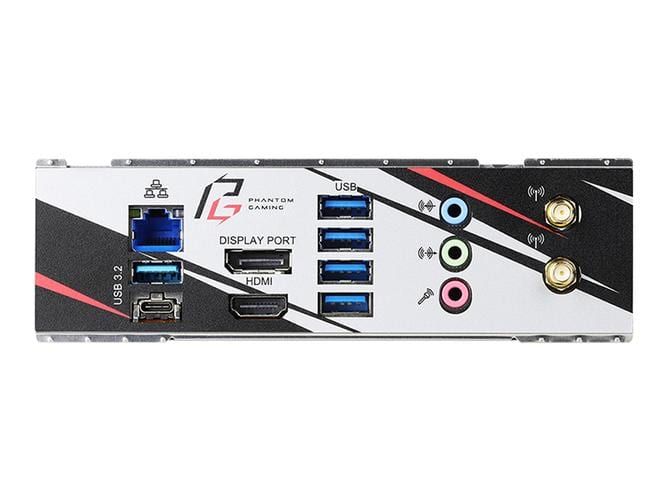

华擎 B550M-ITX/ac

17 厘米见方的 AM4 迷你板，却保留 PCIe 4.0 与双 M.2，供电足以喂饱 65W 级锐龙，价格平实，是打造 ITX 小钢炮与黑群晖等低功耗主机的经典选择。
客观评测
B550M-ITX/ac 在 17×17cm 的板型内提供了 1 条 PCIe 4.0 x16 显卡插槽与 2 个 M.2 接口，其中主 M.2 支持 PCIe 4.0 x4，规格在同价位 ITX 板中少见。供电部分约 8 相设计，适配 65W 级锐龙 5/7 处理器长时间运行没有问题，但不适合搭配高功耗型号极限超频。网络采用 Intel I211-AT 千兆网卡与 WiFi 5 无线模块，音频为 ALC1200，外围配置务实。4 个 SATA 接口也兼顾了小型 NAS 场景。
主观点评
这块小板是 ITX 装机爱好者的常客，巴掌大的尺寸塞进 A4 机箱毫无压力。点亮过程顺利，BIOS 简洁够用，日常办公与 1080P 游戏体验稳定。它的取舍很明确：把预算留给了 PCIe 4.0 和双 M.2，牺牲了无线规格与供电豪华度。用它装一台放在桌角的 5600X 小钢炮，性价比相当突出，这也是它长期热销的原因。
优点与不足
- ITX 板型中罕见的双 M.2 与 PCIe 4.0
- 价格亲民，AM4 整体装机成本低
- 千兆 Intel 网卡稳定可靠
- 供电规格一般，不适合高功耗超频 U
- 仅 WiFi 5 无线，双内存槽容量上限 64GB
参数规格
| 芯片组 | AMD B550 |
|---|---|
| 处理器插槽 | Socket AM4（锐龙 3000/5000 系列） |
| 板型 | Mini-ITX（17×17cm） |
| 内存 | 2×DDR4 DIMM，最高 64GB 双通道 |
| 内存频率 | DDR4-4733+(OC) |
| 供电 | 约 8 相数字供电 |
| 扩展槽 | 1×PCIe 4.0 x16 |
| M.2 接口 | 2×M.2（1×PCIe 4.0 x4 + 1×PCIe 3.0） |
| SATA | 4×SATA 6Gb/s |
| 网络 | Intel I211-AT 千兆网卡 |
| 无线 | WiFi 5（802.11ac）+ 蓝牙 4.2 |
| 音频 | Realtek ALC1200 7.1 声道 |
| USB | 后置 USB 3.2 Gen1 Type-A / Type-C |
| 视频输出 | HDMI + DisplayPort（需带核显 CPU） |